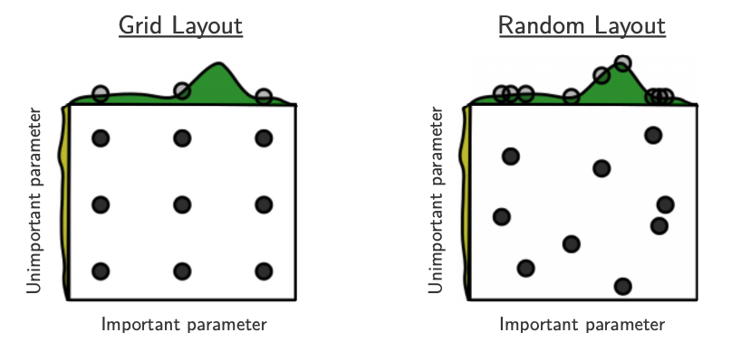
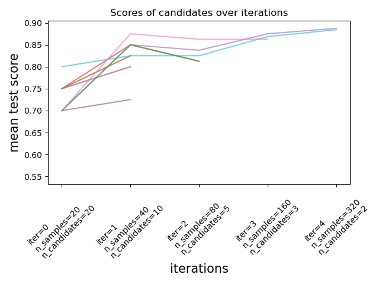

import os
import sys
sys.path.append(os.path.join(os.path.abspath(".."), "code"))
import matplotlib.pyplot as plt
import mglearn
import numpy as np
import pandas as pd
from plotting_functions import *
from sklearn.dummy import DummyClassifier
from sklearn.impute import SimpleImputer
from sklearn.model_selection import cross_val_score, cross_validate, train_test_split
from sklearn.pipeline import Pipeline, make_pipeline
from sklearn.preprocessing import OneHotEncoder, StandardScaler
from sklearn.svm import SVC
from sklearn.tree import DecisionTreeClassifier
from utils import *
%matplotlib inline
pd.set_option("display.max_colwidth", 200)
---------------------------------------------------------------------------
ModuleNotFoundError Traceback (most recent call last)
Cell In[1], line 7
4 sys.path.append(os.path.join(os.path.abspath(".."), "code"))
6 import matplotlib.pyplot as plt
----> 7 import mglearn
8 import numpy as np
9 import pandas as pd
ModuleNotFoundError: No module named 'mglearn'
Lecture 8: Hyperparameter Optimization and Optimization Bias#
UBC 2023-24
Instructor: Varada Kolhatkar and Andrew Roth
(iClicker) Exercise 7.2#
iClicker cloud join link: https://join.iclicker.com/SNBF
Select all of the following statements which are TRUE.
(A) Increasing logistic regression’s
Chyperparameter increases model complexity.(B) For logistic regression the raw output score can be used to calculate the probability score for a given prediction.
(C) For linear classifier trained on \(d\) features, the decision boundary is a \(d-1\)-dimensional hyperparlane.
(D) A linear model is likely to be uncertain about the data points close to the decision boundary.
Learning outcomes#
From this lecture, you will be able to
Explain the need for hyperparameter optimization
Carry out hyperparameter optimization using
sklearn’sGridSearchCVandRandomizedSearchCVExplain different hyperparameters of
GridSearchCVExplain the importance of selecting a good range for the values.
Explain optimization bias
Identify and reason when to trust and not trust reported accuracies
Motivation#
Remember that the fundamental goal of supervised machine learning is to generalize beyond what we see in the training examples.
We have been using data splitting and cross-validation to provide a framework to approximate generalization error.
With this framework, we can improve the model’s generalization performance by tuning model hyperparameters using cross-validation on the training set.
Hyperparameters: the problem#
In order to improve the generalization performance, finding the best values for the important hyperparameters of a model is necessary for almost all models and datasets.
Picking good hyperparameters is important because if we don’t do it, we might end up with an underfit or overfit model.
Some ways to pick hyperparameters:#
Manual or expert knowledge or heuristics based optimization
Data-driven or automated optimization
Manual hyperparameter optimization#
Advantage: we may have some intuition about what might work.
E.g. if I’m massively overfitting, try decreasing
max_depthorC.
Disadvantages
It takes a lot of work
Not reproducible
In very complicated cases, our intuition might be worse than a data-driven approach
Automated hyperparameter optimization#
Formulate the hyperparamter optimization as a one big search problem.
Often we have many hyperparameters of different types: Categorical, integer, and continuous.
Often, the search space is quite big and systematic search for optimal values is infeasible.
mglearn.plots.plot_grid_search_overview()
spotify_df = pd.read_csv("../data/spotify.csv", index_col=0)
X_spotify = spotify_df.drop(columns=["target", "artist"])
y_spotify = spotify_df["target"]
X_spotify.head()
| acousticness | danceability | duration_ms | energy | instrumentalness | key | liveness | loudness | mode | speechiness | tempo | time_signature | valence | song_title | |
|---|---|---|---|---|---|---|---|---|---|---|---|---|---|---|
| 0 | 0.0102 | 0.833 | 204600 | 0.434 | 0.021900 | 2 | 0.1650 | -8.795 | 1 | 0.4310 | 150.062 | 4.0 | 0.286 | Mask Off |
| 1 | 0.1990 | 0.743 | 326933 | 0.359 | 0.006110 | 1 | 0.1370 | -10.401 | 1 | 0.0794 | 160.083 | 4.0 | 0.588 | Redbone |
| 2 | 0.0344 | 0.838 | 185707 | 0.412 | 0.000234 | 2 | 0.1590 | -7.148 | 1 | 0.2890 | 75.044 | 4.0 | 0.173 | Xanny Family |
| 3 | 0.6040 | 0.494 | 199413 | 0.338 | 0.510000 | 5 | 0.0922 | -15.236 | 1 | 0.0261 | 86.468 | 4.0 | 0.230 | Master Of None |
| 4 | 0.1800 | 0.678 | 392893 | 0.561 | 0.512000 | 5 | 0.4390 | -11.648 | 0 | 0.0694 | 174.004 | 4.0 | 0.904 | Parallel Lines |
X_train, X_test, y_train, y_test = train_test_split(
X_spotify, y_spotify, test_size=0.2, random_state=123
)
numeric_feats = [
'acousticness', 'danceability', 'energy',
'instrumentalness', 'liveness', 'loudness',
'speechiness', 'tempo', 'valence'
]
categorical_feats = ['time_signature', 'key']
passthrough_feats = ['mode']
text_feat = "song_title"
from sklearn.compose import make_column_transformer
from sklearn.feature_extraction.text import CountVectorizer
preprocessor = make_column_transformer(
(StandardScaler(), numeric_feats),
(OneHotEncoder(handle_unknown = "ignore"), categorical_feats),
("passthrough", passthrough_feats),
(CountVectorizer(max_features=100, stop_words="english"), text_feat)
)
svc_pipe = make_pipeline(preprocessor, SVC)
best_score = 0
param_grid = {"max_depth": np.arange(1, 20, 2)}
results_dict = {"max_depth": [], "mean_cv_score": []}
for depth in param_grid["max_depth"]: # for each combination of parameters, train an SVC
dt_pipe = make_pipeline(preprocessor, DecisionTreeClassifier(max_depth=depth))
scores = cross_val_score(dt_pipe, X_train, y_train) # perform cross-validation
mean_score = np.mean(scores) # compute mean cross-validation accuracy
if mean_score > best_score: # if we got a better score, store the score and parameters
best_score = mean_score
best_params = {"max_depth": depth}
results_dict["max_depth"].append(depth)
results_dict["mean_cv_score"].append(mean_score)
best_params
{'max_depth': 5}
best_score
0.729702132569275
Tuning SVC#
pipe_svm = make_pipeline(preprocessor, SVC()) # We need scaling for SVM RBF
scores = cross_validate(pipe_svm, X_train, y_train, return_train_score=True)
pd.DataFrame(scores).mean()
fit_time 0.084608
score_time 0.020084
test_score 0.734011
train_score 0.828891
dtype: float64
Now let’s try exhaustive hyperparameter search using for loops.
This is what we have been doing for this:
for gamma in [0.01, 1, 10, 100]: # for some values of gamma
for C in [0.01, 1, 10, 100]: # for some values of C
for fold in folds:
fit in training portion with the given C
score on validation portion
compute average score
pick hyperparameter values which yield with best average score
best_score = 0
param_grid = {
"C": [0.001, 0.01, 0.1, 1, 10, 100],
"gamma": [0.001, 0.01, 0.1, 1, 10, 100],
}
results_dict = {"C": [], "gamma": [], "mean_cv_score": []}
for gamma in param_grid["gamma"]:
for C in param_grid["C"]: # for each combination of parameters, train an SVC
pipe_svm = make_pipeline(preprocessor, SVC(C=C, gamma=gamma))
scores = cross_val_score(pipe_svm, X_train, y_train) # perform cross-validation
mean_score = np.mean(scores) # compute mean cross-validation accuracy
if mean_score > best_score: # if we got a better score, store the score and parameters
best_score = mean_score
best_parameters = {"C": C, "gamma": gamma}
results_dict["C"].append(C)
results_dict["gamma"].append(gamma)
results_dict["mean_cv_score"].append(mean_score)
best_parameters
{'C': 1, 'gamma': 0.1}
best_score
0.7352614272253524
df = pd.DataFrame(results_dict)
df.sort_values(by="mean_cv_score", ascending=False).head(10)
| C | gamma | mean_cv_score | |
|---|---|---|---|
| 15 | 1.0 | 0.100 | 0.735261 |
| 16 | 10.0 | 0.100 | 0.722249 |
| 11 | 100.0 | 0.010 | 0.716657 |
| 10 | 10.0 | 0.010 | 0.716655 |
| 5 | 100.0 | 0.001 | 0.705511 |
| 14 | 0.1 | 0.100 | 0.701173 |
| 9 | 1.0 | 0.010 | 0.691877 |
| 17 | 100.0 | 0.100 | 0.677601 |
| 4 | 10.0 | 0.001 | 0.673277 |
| 8 | 0.1 | 0.010 | 0.652828 |
scores = np.array(df.mean_cv_score).reshape(6, 6)
mglearn.tools.heatmap(
scores,
xlabel="C",
xticklabels=param_grid["C"],
ylabel="gamma",
yticklabels=param_grid["gamma"],
cmap="viridis",
)
<matplotlib.collections.PolyCollection at 0x7f82533f4990>
We have 6 possible values for
Cand 6 possible values forgamma.In 5-fold cross-validation, for each combination of parameter values, five accuracies are computed.
So to evaluate the accuracy of the SVM using 6 values of
Cand 6 values ofgammausing five-fold cross-validation, we need to train xxxx models!
Once we have optimized hyperparameters, we retrain a model on the full training set with these optimized hyperparameters.
svc_pipe = make_pipeline(preprocessor, SVC(C=best_parameters["C"], gamma=best_parameters["gamma"]))
svc_pipe.fit(X_train, y_train)
svc_pipe.score(X_test, y_test)
0.75
This process is so common that there are some standard methods in scikit-learn where we can carry out all of this in a more compact way.
mglearn.plots.plot_grid_search_overview()
In this lecture we are going to talk about two such most commonly used automated optimizations methods from scikit-learn.
Exhaustive grid search:
sklearn.model_selection.GridSearchCVRandomized search:
sklearn.model_selection.RandomizedSearchCV
The “CV” stands for cross-validation; these methods have built-in cross-validation.
Exhaustive grid search: sklearn.model_selection.GridSearchCV#
For
GridSearchCVwe needan instantiated model or a pipeline
a parameter grid: A user specifies a set of values for each hyperparameter.
other optional arguments
The method considers product of the sets and evaluates each combination one by one.
from sklearn.model_selection import GridSearchCV
pipe_svm = make_pipeline(preprocessor, SVC())
param_grid = {
"columntransformer__countvectorizer__max_features": [100, 200, 400, 800, 1000, 2000],
"svc__gamma": [0.001, 0.01, 0.1, 1.0, 10, 100],
"svc__C": [0.001, 0.01, 0.1, 1.0, 10, 100],
}
# Create a grid search object
grid_search = GridSearchCV(pipe_svm, param_grid, cv=5, n_jobs=-1, return_train_score=True)
from sklearn import set_config
set_config(display="diagram")
The GridSearchCV object above behaves like a classifier. We can call fit, predict or score on it.
grid_search.fit(X_train, y_train)
GridSearchCV(cv=5,
estimator=Pipeline(steps=[('columntransformer',
ColumnTransformer(transformers=[('standardscaler',
StandardScaler(),
['acousticness',
'danceability',
'energy',
'instrumentalness',
'liveness',
'loudness',
'speechiness',
'tempo',
'valence']),
('onehotencoder',
OneHotEncoder(handle_unknown='ignore'),
['time_signature',
'key']),
('passthrough',
'passthrough',
['mode']),
('countvectorizer',
CountVectorizer(max_features=100,
stop_words='english'),
'song_title')])),
('svc', SVC())]),
n_jobs=-1,
param_grid={'columntransformer__countvectorizer__max_features': [100,
200,
400,
800,
1000,
2000],
'svc__C': [0.001, 0.01, 0.1, 1.0, 10, 100],
'svc__gamma': [0.001, 0.01, 0.1, 1.0, 10, 100]},
return_train_score=True)In a Jupyter environment, please rerun this cell to show the HTML representation or trust the notebook. On GitHub, the HTML representation is unable to render, please try loading this page with nbviewer.org.
GridSearchCV(cv=5,
estimator=Pipeline(steps=[('columntransformer',
ColumnTransformer(transformers=[('standardscaler',
StandardScaler(),
['acousticness',
'danceability',
'energy',
'instrumentalness',
'liveness',
'loudness',
'speechiness',
'tempo',
'valence']),
('onehotencoder',
OneHotEncoder(handle_unknown='ignore'),
['time_signature',
'key']),
('passthrough',
'passthrough',
['mode']),
('countvectorizer',
CountVectorizer(max_features=100,
stop_words='english'),
'song_title')])),
('svc', SVC())]),
n_jobs=-1,
param_grid={'columntransformer__countvectorizer__max_features': [100,
200,
400,
800,
1000,
2000],
'svc__C': [0.001, 0.01, 0.1, 1.0, 10, 100],
'svc__gamma': [0.001, 0.01, 0.1, 1.0, 10, 100]},
return_train_score=True)Pipeline(steps=[('columntransformer',
ColumnTransformer(transformers=[('standardscaler',
StandardScaler(),
['acousticness',
'danceability', 'energy',
'instrumentalness',
'liveness', 'loudness',
'speechiness', 'tempo',
'valence']),
('onehotencoder',
OneHotEncoder(handle_unknown='ignore'),
['time_signature', 'key']),
('passthrough', 'passthrough',
['mode']),
('countvectorizer',
CountVectorizer(max_features=100,
stop_words='english'),
'song_title')])),
('svc', SVC())])ColumnTransformer(transformers=[('standardscaler', StandardScaler(),
['acousticness', 'danceability', 'energy',
'instrumentalness', 'liveness', 'loudness',
'speechiness', 'tempo', 'valence']),
('onehotencoder',
OneHotEncoder(handle_unknown='ignore'),
['time_signature', 'key']),
('passthrough', 'passthrough', ['mode']),
('countvectorizer',
CountVectorizer(max_features=100,
stop_words='english'),
'song_title')])['acousticness', 'danceability', 'energy', 'instrumentalness', 'liveness', 'loudness', 'speechiness', 'tempo', 'valence']
StandardScaler()
['time_signature', 'key']
OneHotEncoder(handle_unknown='ignore')
['mode']
passthrough
song_title
CountVectorizer(max_features=100, stop_words='english')
SVC()
It is often helpful to visualize results of all cross-validation experiments.
You can access this information using
cv_results_attribute of a fittedGridSearchCVobject.
results = pd.DataFrame(grid_search.cv_results_)
results.T
| 0 | 1 | 2 | 3 | 4 | 5 | 6 | 7 | 8 | 9 | ... | 206 | 207 | 208 | 209 | 210 | 211 | 212 | 213 | 214 | 215 | |
|---|---|---|---|---|---|---|---|---|---|---|---|---|---|---|---|---|---|---|---|---|---|
| mean_fit_time | 0.3129 | 0.317402 | 0.318038 | 0.316564 | 0.327592 | 0.385581 | 0.310575 | 0.332467 | 0.34058 | 0.322459 | ... | 0.998885 | 0.897492 | 0.84445 | 0.692248 | 0.46924 | 0.556294 | 0.448591 | 0.462728 | 0.451487 | 0.470856 |
| std_fit_time | 0.014065 | 0.002811 | 0.014726 | 0.002606 | 0.007457 | 0.024828 | 0.001589 | 0.026281 | 0.043084 | 0.001987 | ... | 0.076945 | 0.060188 | 0.030602 | 0.02552 | 0.038753 | 0.065264 | 0.004724 | 0.0603 | 0.006248 | 0.050632 |
| mean_score_time | 0.090046 | 0.082929 | 0.082356 | 0.086134 | 0.087315 | 0.102047 | 0.082758 | 0.099931 | 0.090909 | 0.088123 | ... | 0.176486 | 0.191313 | 0.165767 | 0.142972 | 0.088883 | 0.072625 | 0.085139 | 0.103724 | 0.100183 | 0.097011 |
| std_score_time | 0.008807 | 0.003897 | 0.002679 | 0.001338 | 0.002924 | 0.002685 | 0.002746 | 0.030257 | 0.011999 | 0.002463 | ... | 0.007079 | 0.005768 | 0.023229 | 0.003007 | 0.012636 | 0.003285 | 0.002746 | 0.005543 | 0.001469 | 0.026408 |
| param_columntransformer__countvectorizer__max_features | 100 | 100 | 100 | 100 | 100 | 100 | 100 | 100 | 100 | 100 | ... | 2000 | 2000 | 2000 | 2000 | 2000 | 2000 | 2000 | 2000 | 2000 | 2000 |
| param_svc__C | 0.001 | 0.001 | 0.001 | 0.001 | 0.001 | 0.001 | 0.01 | 0.01 | 0.01 | 0.01 | ... | 10 | 10 | 10 | 10 | 100 | 100 | 100 | 100 | 100 | 100 |
| param_svc__gamma | 0.001 | 0.01 | 0.1 | 1.0 | 10 | 100 | 0.001 | 0.01 | 0.1 | 1.0 | ... | 0.1 | 1.0 | 10 | 100 | 0.001 | 0.01 | 0.1 | 1.0 | 10 | 100 |
| params | {'columntransformer__countvectorizer__max_features': 100, 'svc__C': 0.001, 'svc__gamma': 0.001} | {'columntransformer__countvectorizer__max_features': 100, 'svc__C': 0.001, 'svc__gamma': 0.01} | {'columntransformer__countvectorizer__max_features': 100, 'svc__C': 0.001, 'svc__gamma': 0.1} | {'columntransformer__countvectorizer__max_features': 100, 'svc__C': 0.001, 'svc__gamma': 1.0} | {'columntransformer__countvectorizer__max_features': 100, 'svc__C': 0.001, 'svc__gamma': 10} | {'columntransformer__countvectorizer__max_features': 100, 'svc__C': 0.001, 'svc__gamma': 100} | {'columntransformer__countvectorizer__max_features': 100, 'svc__C': 0.01, 'svc__gamma': 0.001} | {'columntransformer__countvectorizer__max_features': 100, 'svc__C': 0.01, 'svc__gamma': 0.01} | {'columntransformer__countvectorizer__max_features': 100, 'svc__C': 0.01, 'svc__gamma': 0.1} | {'columntransformer__countvectorizer__max_features': 100, 'svc__C': 0.01, 'svc__gamma': 1.0} | ... | {'columntransformer__countvectorizer__max_features': 2000, 'svc__C': 10, 'svc__gamma': 0.1} | {'columntransformer__countvectorizer__max_features': 2000, 'svc__C': 10, 'svc__gamma': 1.0} | {'columntransformer__countvectorizer__max_features': 2000, 'svc__C': 10, 'svc__gamma': 10} | {'columntransformer__countvectorizer__max_features': 2000, 'svc__C': 10, 'svc__gamma': 100} | {'columntransformer__countvectorizer__max_features': 2000, 'svc__C': 100, 'svc__gamma': 0.001} | {'columntransformer__countvectorizer__max_features': 2000, 'svc__C': 100, 'svc__gamma': 0.01} | {'columntransformer__countvectorizer__max_features': 2000, 'svc__C': 100, 'svc__gamma': 0.1} | {'columntransformer__countvectorizer__max_features': 2000, 'svc__C': 100, 'svc__gamma': 1.0} | {'columntransformer__countvectorizer__max_features': 2000, 'svc__C': 100, 'svc__gamma': 10} | {'columntransformer__countvectorizer__max_features': 2000, 'svc__C': 100, 'svc__gamma': 100} |
| split0_test_score | 0.50774 | 0.50774 | 0.50774 | 0.50774 | 0.50774 | 0.50774 | 0.50774 | 0.50774 | 0.50774 | 0.50774 | ... | 0.733746 | 0.616099 | 0.50774 | 0.504644 | 0.718266 | 0.718266 | 0.724458 | 0.616099 | 0.50774 | 0.504644 |
| split1_test_score | 0.50774 | 0.50774 | 0.50774 | 0.50774 | 0.50774 | 0.50774 | 0.50774 | 0.50774 | 0.50774 | 0.50774 | ... | 0.77709 | 0.625387 | 0.510836 | 0.510836 | 0.724458 | 0.739938 | 0.764706 | 0.625387 | 0.510836 | 0.510836 |
| split2_test_score | 0.50774 | 0.50774 | 0.50774 | 0.50774 | 0.50774 | 0.50774 | 0.50774 | 0.50774 | 0.50774 | 0.50774 | ... | 0.690402 | 0.606811 | 0.50774 | 0.50774 | 0.693498 | 0.705882 | 0.687307 | 0.606811 | 0.50774 | 0.50774 |
| split3_test_score | 0.506211 | 0.506211 | 0.506211 | 0.506211 | 0.506211 | 0.506211 | 0.506211 | 0.506211 | 0.506211 | 0.506211 | ... | 0.708075 | 0.618012 | 0.509317 | 0.509317 | 0.68323 | 0.704969 | 0.708075 | 0.618012 | 0.509317 | 0.509317 |
| split4_test_score | 0.509317 | 0.509317 | 0.509317 | 0.509317 | 0.509317 | 0.509317 | 0.509317 | 0.509317 | 0.509317 | 0.509317 | ... | 0.723602 | 0.645963 | 0.509317 | 0.509317 | 0.720497 | 0.717391 | 0.720497 | 0.645963 | 0.509317 | 0.509317 |
| mean_test_score | 0.50775 | 0.50775 | 0.50775 | 0.50775 | 0.50775 | 0.50775 | 0.50775 | 0.50775 | 0.50775 | 0.50775 | ... | 0.726583 | 0.622454 | 0.50899 | 0.508371 | 0.70799 | 0.717289 | 0.721008 | 0.622454 | 0.50899 | 0.508371 |
| std_test_score | 0.000982 | 0.000982 | 0.000982 | 0.000982 | 0.000982 | 0.000982 | 0.000982 | 0.000982 | 0.000982 | 0.000982 | ... | 0.029198 | 0.013161 | 0.001162 | 0.002105 | 0.01647 | 0.012616 | 0.025396 | 0.013161 | 0.001162 | 0.002105 |
| rank_test_score | 121 | 121 | 121 | 121 | 121 | 121 | 121 | 121 | 121 | 121 | ... | 9 | 81 | 91 | 97 | 28 | 22 | 18 | 81 | 91 | 97 |
| split0_train_score | 0.507752 | 0.507752 | 0.507752 | 0.507752 | 0.507752 | 0.507752 | 0.507752 | 0.507752 | 0.507752 | 0.507752 | ... | 1.0 | 1.0 | 1.0 | 1.0 | 0.828682 | 0.989147 | 1.0 | 1.0 | 1.0 | 1.0 |
| split1_train_score | 0.507752 | 0.507752 | 0.507752 | 0.507752 | 0.507752 | 0.507752 | 0.507752 | 0.507752 | 0.507752 | 0.507752 | ... | 0.999225 | 1.0 | 1.0 | 1.0 | 0.834109 | 0.989922 | 1.0 | 1.0 | 1.0 | 1.0 |
| split2_train_score | 0.507752 | 0.507752 | 0.507752 | 0.507752 | 0.507752 | 0.507752 | 0.507752 | 0.507752 | 0.507752 | 0.507752 | ... | 0.99845 | 0.999225 | 0.999225 | 0.999225 | 0.827907 | 0.987597 | 0.999225 | 0.999225 | 0.999225 | 0.999225 |
| split3_train_score | 0.508133 | 0.508133 | 0.508133 | 0.508133 | 0.508133 | 0.508133 | 0.508133 | 0.508133 | 0.508133 | 0.508133 | ... | 0.998451 | 0.999225 | 0.999225 | 0.999225 | 0.841208 | 0.989156 | 0.999225 | 0.999225 | 0.999225 | 0.999225 |
| split4_train_score | 0.507359 | 0.507359 | 0.507359 | 0.507359 | 0.507359 | 0.507359 | 0.507359 | 0.507359 | 0.507359 | 0.507359 | ... | 0.999225 | 0.999225 | 0.999225 | 0.999225 | 0.82804 | 0.988381 | 0.999225 | 0.999225 | 0.999225 | 0.999225 |
| mean_train_score | 0.50775 | 0.50775 | 0.50775 | 0.50775 | 0.50775 | 0.50775 | 0.50775 | 0.50775 | 0.50775 | 0.50775 | ... | 0.99907 | 0.999535 | 0.999535 | 0.999535 | 0.831989 | 0.988841 | 0.999535 | 0.999535 | 0.999535 | 0.999535 |
| std_train_score | 0.000245 | 0.000245 | 0.000245 | 0.000245 | 0.000245 | 0.000245 | 0.000245 | 0.000245 | 0.000245 | 0.000245 | ... | 0.00058 | 0.00038 | 0.00038 | 0.00038 | 0.005151 | 0.00079 | 0.00038 | 0.00038 | 0.00038 | 0.00038 |
23 rows × 216 columns
pd.DataFrame(grid_search.cv_results_)[
[
"mean_test_score",
"param_columntransformer__countvectorizer__max_features",
"param_svc__gamma",
"param_svc__C",
"mean_fit_time",
"rank_test_score",
]
].set_index("rank_test_score").sort_index().T
| rank_test_score | 1 | 2 | 3 | 4 | 5 | 5 | 7 | 8 | 9 | 10 | ... | 121 | 121 | 121 | 121 | 121 | 121 | 121 | 121 | 121 | 121 |
|---|---|---|---|---|---|---|---|---|---|---|---|---|---|---|---|---|---|---|---|---|---|
| mean_test_score | 0.739598 | 0.738977 | 0.736498 | 0.735879 | 0.735261 | 0.735261 | 0.727829 | 0.727198 | 0.726583 | 0.726573 | ... | 0.50775 | 0.50775 | 0.50775 | 0.50775 | 0.50775 | 0.50775 | 0.50775 | 0.50775 | 0.50775 | 0.50775 |
| param_columntransformer__countvectorizer__max_features | 1000 | 2000 | 400 | 800 | 200 | 100 | 800 | 1000 | 2000 | 400 | ... | 1000 | 1000 | 1000 | 400 | 400 | 400 | 400 | 400 | 1000 | 100 |
| param_svc__gamma | 0.1 | 0.1 | 0.1 | 0.1 | 0.1 | 0.1 | 0.1 | 0.1 | 0.1 | 0.1 | ... | 0.1 | 0.01 | 0.001 | 0.001 | 0.01 | 0.1 | 1.0 | 10 | 100 | 0.001 |
| param_svc__C | 1.0 | 1.0 | 1.0 | 1.0 | 1.0 | 1.0 | 10 | 10 | 10 | 10 | ... | 0.001 | 0.001 | 0.001 | 0.001 | 0.001 | 0.001 | 0.001 | 0.001 | 0.001 | 0.001 |
| mean_fit_time | 0.371864 | 0.747294 | 0.344238 | 0.351213 | 0.324994 | 0.293022 | 0.459471 | 0.51741 | 0.998885 | 0.48337 | ... | 0.453231 | 0.398281 | 0.412341 | 0.369529 | 0.401357 | 0.395857 | 0.381007 | 0.388232 | 0.462429 | 0.3129 |
5 rows × 216 columns
Other than searching for best hyperparameter values,
GridSearchCValso fits a new model on the whole training set with the parameters that yielded the best results.So we can conveniently call
scoreon the test set with a fittedGridSearchCVobject.
# Get the test scores
grid_search.score(X_test, y_test)
0.7574257425742574
Problems with exhaustive grid search#
Required number of models to evaluate grows exponentially with the dimensionally of the configuration space.
Example: Suppose you have
5 hyperparameters
10 different values for each hyperparameter
You’ll be evaluating \(10^5=100,000\) models! That is you’ll be calling
cross_validate100,000 times!Exhaustive search may become infeasible fairly quickly.
Other options?
Randomized hyperparameter search#
Randomized hyperparameter optimization
Samples configurations at random until certain budget (e.g., time) is exhausted
from sklearn.model_selection import RandomizedSearchCV
param_grid = {
"columntransformer__countvectorizer__max_features": [100, 200, 400, 800, 1000, 2000],
"svc__gamma": [0.001, 0.01, 0.1, 1.0, 10, 100],
"svc__C": np.linspace(2, 3, 6),
}
print("Grid size: %d" % (np.prod(list(map(len, param_grid.values())))))
param_grid
Grid size: 216
{'columntransformer__countvectorizer__max_features': [100,
200,
400,
800,
1000,
2000],
'svc__gamma': [0.001, 0.01, 0.1, 1.0, 10, 100],
'svc__C': array([2. , 2.2, 2.4, 2.6, 2.8, 3. ])}
# Create a random search object
random_search = RandomizedSearchCV(svc_pipe, param_distributions=param_grid, n_jobs=-1, n_iter=20, cv=5, random_state=42)
# Carry out the search
random_search.fit(X_train, y_train)
RandomizedSearchCV(cv=5,
estimator=Pipeline(steps=[('columntransformer',
ColumnTransformer(transformers=[('standardscaler',
StandardScaler(),
['acousticness',
'danceability',
'energy',
'instrumentalness',
'liveness',
'loudness',
'speechiness',
'tempo',
'valence']),
('onehotencoder',
OneHotEncoder(handle_unknown='ignore'),
['time_signature',
'key']),
('passthrough',
'passthrough',
['mode']),
('countvectorizer',
CountVectorizer(max_features=100,
stop_words='english'),
'song_title')])),
('svc', SVC(C=1, gamma=0.1))]),
n_iter=20, n_jobs=-1,
param_distributions={'columntransformer__countvectorizer__max_features': [100,
200,
400,
800,
1000,
2000],
'svc__C': array([2. , 2.2, 2.4, 2.6, 2.8, 3. ]),
'svc__gamma': [0.001, 0.01, 0.1, 1.0,
10, 100]},
random_state=42)In a Jupyter environment, please rerun this cell to show the HTML representation or trust the notebook. On GitHub, the HTML representation is unable to render, please try loading this page with nbviewer.org.
RandomizedSearchCV(cv=5,
estimator=Pipeline(steps=[('columntransformer',
ColumnTransformer(transformers=[('standardscaler',
StandardScaler(),
['acousticness',
'danceability',
'energy',
'instrumentalness',
'liveness',
'loudness',
'speechiness',
'tempo',
'valence']),
('onehotencoder',
OneHotEncoder(handle_unknown='ignore'),
['time_signature',
'key']),
('passthrough',
'passthrough',
['mode']),
('countvectorizer',
CountVectorizer(max_features=100,
stop_words='english'),
'song_title')])),
('svc', SVC(C=1, gamma=0.1))]),
n_iter=20, n_jobs=-1,
param_distributions={'columntransformer__countvectorizer__max_features': [100,
200,
400,
800,
1000,
2000],
'svc__C': array([2. , 2.2, 2.4, 2.6, 2.8, 3. ]),
'svc__gamma': [0.001, 0.01, 0.1, 1.0,
10, 100]},
random_state=42)Pipeline(steps=[('columntransformer',
ColumnTransformer(transformers=[('standardscaler',
StandardScaler(),
['acousticness',
'danceability', 'energy',
'instrumentalness',
'liveness', 'loudness',
'speechiness', 'tempo',
'valence']),
('onehotencoder',
OneHotEncoder(handle_unknown='ignore'),
['time_signature', 'key']),
('passthrough', 'passthrough',
['mode']),
('countvectorizer',
CountVectorizer(max_features=100,
stop_words='english'),
'song_title')])),
('svc', SVC(C=1, gamma=0.1))])ColumnTransformer(transformers=[('standardscaler', StandardScaler(),
['acousticness', 'danceability', 'energy',
'instrumentalness', 'liveness', 'loudness',
'speechiness', 'tempo', 'valence']),
('onehotencoder',
OneHotEncoder(handle_unknown='ignore'),
['time_signature', 'key']),
('passthrough', 'passthrough', ['mode']),
('countvectorizer',
CountVectorizer(max_features=100,
stop_words='english'),
'song_title')])['acousticness', 'danceability', 'energy', 'instrumentalness', 'liveness', 'loudness', 'speechiness', 'tempo', 'valence']
StandardScaler()
['time_signature', 'key']
OneHotEncoder(handle_unknown='ignore')
['mode']
passthrough
song_title
CountVectorizer(max_features=100, stop_words='english')
SVC(C=1, gamma=0.1)
pd.DataFrame(random_search.cv_results_)[
[
"mean_test_score",
"param_columntransformer__countvectorizer__max_features",
"param_svc__gamma",
"param_svc__C",
"mean_fit_time",
"rank_test_score",
]
].set_index("rank_test_score").sort_index().T
| rank_test_score | 1 | 2 | 3 | 4 | 5 | 6 | 7 | 8 | 9 | 10 | 11 | 12 | 13 | 14 | 14 | 16 | 16 | 18 | 18 | 18 |
|---|---|---|---|---|---|---|---|---|---|---|---|---|---|---|---|---|---|---|---|---|
| mean_test_score | 0.743321 | 0.741463 | 0.71172 | 0.710476 | 0.706761 | 0.706759 | 0.660866 | 0.659625 | 0.659006 | 0.652185 | 0.646611 | 0.645992 | 0.633596 | 0.628025 | 0.628025 | 0.622454 | 0.622454 | 0.50899 | 0.50899 | 0.50899 |
| param_columntransformer__countvectorizer__max_features | 2000 | 1000 | 800 | 2000 | 200 | 400 | 800 | 200 | 100 | 100 | 100 | 100 | 800 | 1000 | 1000 | 2000 | 2000 | 1000 | 2000 | 1000 |
| param_svc__gamma | 0.1 | 0.1 | 0.01 | 0.01 | 0.01 | 0.01 | 0.001 | 0.001 | 0.001 | 0.001 | 1.0 | 1.0 | 1.0 | 1.0 | 1.0 | 1.0 | 1.0 | 10 | 10 | 10 |
| param_svc__C | 2.0 | 3.0 | 3.0 | 2.8 | 3.0 | 2.0 | 3.0 | 3.0 | 3.0 | 2.6 | 2.4 | 2.2 | 2.0 | 2.4 | 3.0 | 3.0 | 2.6 | 2.2 | 2.2 | 2.8 |
| mean_fit_time | 0.51042 | 0.426658 | 0.32615 | 0.370865 | 0.306083 | 0.306062 | 0.352345 | 0.321206 | 0.316762 | 0.339304 | 0.38073 | 0.379397 | 0.441245 | 0.436296 | 0.46167 | 0.422954 | 0.4017 | 0.488947 | 0.484224 | 0.467898 |
n_iter#
Note the
n_iter, we didn’t need this forGridSearchCV.Larger
n_iterwill take longer but it’ll do more searching.Remember you still need to multiply by number of folds!
I have set the
random_statefor reproducibility but you don’t have to do it.
Advantages of RandomizedSearchCV#
Faster compared to
GridSearchCV.Adding parameters that do not influence the performance does not affect efficiency.
Works better when some parameters are more important than others.
In general, I recommend using
RandomizedSearchCVrather thanGridSearchCV.
Advantages of RandomizedSearchCV#

Source: Bergstra and Bengio, Random Search for Hyper-Parameter Optimization, JMLR 2012.
The yellow on the left shows how your scores are going to change when you vary the unimportant hyperparameter.
The green on the top shows how your scores are going to change when you vary the important hyperparameter.
You don’t know in advance which hyperparameters are important for your problem.
In the left figure, 6 of the 9 searches are useless because they are only varying the unimportant parameter.
In the right figure, all 9 searches are useful.
Searching for optimal parameters with successive halving#
Successive halving is an iterative selection process where all candidates (the parameter combinations) are evaluated with a small amount of resources (e.g., small amount of training data) at the first iteration.
Checkout successive halving with grid search and random search.

Source: scikit learn.
from sklearn.experimental import enable_halving_search_cv # noqa
from sklearn.model_selection import HalvingRandomSearchCV
from scipy.stats import loguniform, randint, uniform
param_dist = {
"columntransformer__countvectorizer__max_features": randint(100, 2000),
"svc__C": uniform(0.1, 1e4), # loguniform(1e-3, 1e3),
"svc__gamma": loguniform(1e-5, 1e3),
}
rsh = HalvingRandomSearchCV(
estimator=pipe_svm, param_distributions=param_dist, factor=2, random_state=123
)
rsh.fit(X_train, y_train)
HalvingRandomSearchCV(estimator=Pipeline(steps=[('columntransformer',
ColumnTransformer(transformers=[('standardscaler',
StandardScaler(),
['acousticness',
'danceability',
'energy',
'instrumentalness',
'liveness',
'loudness',
'speechiness',
'tempo',
'valence']),
('onehotencoder',
OneHotEncoder(handle_unknown='ignore'),
['time_signature',
'key']),
('passthrough',
'p...
factor=2,
param_distributions={'columntransformer__countvectorizer__max_features': <scipy.stats._distn_infrastructure.rv_discrete_frozen object at 0x7f82533413d0>,
'svc__C': <scipy.stats._distn_infrastructure.rv_continuous_frozen object at 0x7f82532ebcd0>,
'svc__gamma': <scipy.stats._distn_infrastructure.rv_continuous_frozen object at 0x7f825345c910>},
random_state=123)In a Jupyter environment, please rerun this cell to show the HTML representation or trust the notebook. On GitHub, the HTML representation is unable to render, please try loading this page with nbviewer.org.
HalvingRandomSearchCV(estimator=Pipeline(steps=[('columntransformer',
ColumnTransformer(transformers=[('standardscaler',
StandardScaler(),
['acousticness',
'danceability',
'energy',
'instrumentalness',
'liveness',
'loudness',
'speechiness',
'tempo',
'valence']),
('onehotencoder',
OneHotEncoder(handle_unknown='ignore'),
['time_signature',
'key']),
('passthrough',
'p...
factor=2,
param_distributions={'columntransformer__countvectorizer__max_features': <scipy.stats._distn_infrastructure.rv_discrete_frozen object at 0x7f82533413d0>,
'svc__C': <scipy.stats._distn_infrastructure.rv_continuous_frozen object at 0x7f82532ebcd0>,
'svc__gamma': <scipy.stats._distn_infrastructure.rv_continuous_frozen object at 0x7f825345c910>},
random_state=123)Pipeline(steps=[('columntransformer',
ColumnTransformer(transformers=[('standardscaler',
StandardScaler(),
['acousticness',
'danceability', 'energy',
'instrumentalness',
'liveness', 'loudness',
'speechiness', 'tempo',
'valence']),
('onehotencoder',
OneHotEncoder(handle_unknown='ignore'),
['time_signature', 'key']),
('passthrough', 'passthrough',
['mode']),
('countvectorizer',
CountVectorizer(max_features=100,
stop_words='english'),
'song_title')])),
('svc', SVC())])ColumnTransformer(transformers=[('standardscaler', StandardScaler(),
['acousticness', 'danceability', 'energy',
'instrumentalness', 'liveness', 'loudness',
'speechiness', 'tempo', 'valence']),
('onehotencoder',
OneHotEncoder(handle_unknown='ignore'),
['time_signature', 'key']),
('passthrough', 'passthrough', ['mode']),
('countvectorizer',
CountVectorizer(max_features=100,
stop_words='english'),
'song_title')])['acousticness', 'danceability', 'energy', 'instrumentalness', 'liveness', 'loudness', 'speechiness', 'tempo', 'valence']
StandardScaler()
['time_signature', 'key']
OneHotEncoder(handle_unknown='ignore')
['mode']
passthrough
song_title
CountVectorizer(max_features=100, stop_words='english')
SVC()
results = pd.DataFrame(rsh.cv_results_)
results["params_str"] = results.params.apply(str)
results.drop_duplicates(subset=("params_str", "iter"), inplace=True)
results
| iter | n_resources | mean_fit_time | std_fit_time | mean_score_time | std_score_time | param_columntransformer__countvectorizer__max_features | param_svc__C | param_svc__gamma | params | ... | std_test_score | rank_test_score | split0_train_score | split1_train_score | split2_train_score | split3_train_score | split4_train_score | mean_train_score | std_train_score | params_str | |
|---|---|---|---|---|---|---|---|---|---|---|---|---|---|---|---|---|---|---|---|---|---|
| 0 | 0 | 20 | 0.009185 | 0.000736 | 0.005209 | 0.000593 | 1634 | 7129.653205 | 0.026777 | {'columntransformer__countvectorizer__max_features': 1634, 'svc__C': 7129.653205232272, 'svc__gamma': 0.02677733855112973} | ... | 0.333333 | 111 | 1.0 | 1.0 | 1.0 | 1.0 | 1.0 | 1.0 | 0.0 | {'columntransformer__countvectorizer__max_features': 1634, 'svc__C': 7129.653205232272, 'svc__gamma': 0.02677733855112973} |
| 1 | 0 | 20 | 0.008664 | 0.000497 | 0.004867 | 0.000476 | 1222 | 5513.247691 | 5.698385 | {'columntransformer__countvectorizer__max_features': 1222, 'svc__C': 5513.247690828913, 'svc__gamma': 5.698384608345687} | ... | 0.367423 | 22 | 1.0 | 1.0 | 1.0 | 1.0 | 1.0 | 1.0 | 0.0 | {'columntransformer__countvectorizer__max_features': 1222, 'svc__C': 5513.247690828913, 'svc__gamma': 5.698384608345687} |
| 2 | 0 | 20 | 0.008619 | 0.000472 | 0.004798 | 0.000448 | 1247 | 7800.377619 | 0.019382 | {'columntransformer__countvectorizer__max_features': 1247, 'svc__C': 7800.377619120792, 'svc__gamma': 0.019381838999846482} | ... | 0.333333 | 111 | 1.0 | 1.0 | 1.0 | 1.0 | 1.0 | 1.0 | 0.0 | {'columntransformer__countvectorizer__max_features': 1247, 'svc__C': 7800.377619120792, 'svc__gamma': 0.019381838999846482} |
| 3 | 0 | 20 | 0.008512 | 0.000591 | 0.004712 | 0.000479 | 213 | 4809.419015 | 0.013707 | {'columntransformer__countvectorizer__max_features': 213, 'svc__C': 4809.41901484361, 'svc__gamma': 0.013706928443177698} | ... | 0.359784 | 144 | 1.0 | 1.0 | 1.0 | 1.0 | 1.0 | 1.0 | 0.0 | {'columntransformer__countvectorizer__max_features': 213, 'svc__C': 4809.41901484361, 'svc__gamma': 0.013706928443177698} |
| 4 | 0 | 20 | 0.008424 | 0.000609 | 0.004649 | 0.000485 | 1042 | 6273.270093 | 0.003919 | {'columntransformer__countvectorizer__max_features': 1042, 'svc__C': 6273.270093376167, 'svc__gamma': 0.003919287722401839} | ... | 0.406202 | 97 | 1.0 | 1.0 | 1.0 | 1.0 | 1.0 | 1.0 | 0.0 | {'columntransformer__countvectorizer__max_features': 1042, 'svc__C': 6273.270093376167, 'svc__gamma': 0.003919287722401839} |
| ... | ... | ... | ... | ... | ... | ... | ... | ... | ... | ... | ... | ... | ... | ... | ... | ... | ... | ... | ... | ... | ... |
| 155 | 5 | 640 | 0.032643 | 0.000439 | 0.008929 | 0.000193 | 729 | 4943.40065 | 0.092454 | {'columntransformer__countvectorizer__max_features': 729, 'svc__C': 4943.400649628005, 'svc__gamma': 0.09245358900622544} | ... | 0.051925 | 10 | 1.0 | 1.0 | 1.0 | 1.0 | 1.0 | 1.0 | 0.0 | {'columntransformer__countvectorizer__max_features': 729, 'svc__C': 4943.400649628005, 'svc__gamma': 0.09245358900622544} |
| 156 | 5 | 640 | 0.031400 | 0.000288 | 0.009783 | 0.001001 | 1383 | 2705.246646 | 0.173979 | {'columntransformer__countvectorizer__max_features': 1383, 'svc__C': 2705.246646103936, 'svc__gamma': 0.1739787032867638} | ... | 0.046116 | 9 | 1.0 | 1.0 | 1.0 | 1.0 | 1.0 | 1.0 | 0.0 | {'columntransformer__countvectorizer__max_features': 1383, 'svc__C': 2705.246646103936, 'svc__gamma': 0.1739787032867638} |
| 157 | 5 | 640 | 0.030571 | 0.000396 | 0.009017 | 0.000347 | 440 | 5315.613738 | 0.17973 | {'columntransformer__countvectorizer__max_features': 440, 'svc__C': 5315.613738418384, 'svc__gamma': 0.17973005068132514} | ... | 0.043509 | 12 | 1.0 | 1.0 | 1.0 | 1.0 | 1.0 | 1.0 | 0.0 | {'columntransformer__countvectorizer__max_features': 440, 'svc__C': 5315.613738418384, 'svc__gamma': 0.17973005068132514} |
| 158 | 6 | 1280 | 0.102829 | 0.001758 | 0.018003 | 0.000217 | 729 | 4943.40065 | 0.092454 | {'columntransformer__countvectorizer__max_features': 729, 'svc__C': 4943.400649628005, 'svc__gamma': 0.09245358900622544} | ... | 0.010715 | 19 | 1.0 | 1.0 | 1.0 | 1.0 | 1.0 | 1.0 | 0.0 | {'columntransformer__countvectorizer__max_features': 729, 'svc__C': 4943.400649628005, 'svc__gamma': 0.09245358900622544} |
| 159 | 6 | 1280 | 0.097737 | 0.001842 | 0.021678 | 0.000433 | 1383 | 2705.246646 | 0.173979 | {'columntransformer__countvectorizer__max_features': 1383, 'svc__C': 2705.246646103936, 'svc__gamma': 0.1739787032867638} | ... | 0.026620 | 11 | 1.0 | 1.0 | 1.0 | 1.0 | 1.0 | 1.0 | 0.0 | {'columntransformer__countvectorizer__max_features': 1383, 'svc__C': 2705.246646103936, 'svc__gamma': 0.1739787032867638} |
160 rows × 26 columns
(Optional) Fancier methods#
Both
GridSearchCVandRandomizedSearchCVdo each trial independently.What if you could learn from your experience, e.g. learn that
max_depth=3is bad?That could save time because you wouldn’t try combinations involving
max_depth=3in the future.
We can do this with
scikit-optimize, which is a completely different package fromscikit-learnIt uses a technique called “model-based optimization” and we’ll specifically use “Bayesian optimization”.
In short, it uses machine learning to predict what hyperparameters will be good.
Machine learning on machine learning!
(iClicker) Exercise 8.1#
iClicker cloud join link: https://join.iclicker.com/SNBF
Select all of the following statements which are TRUE.
(A) If you get best results at the edges of your parameter grid, it might be a good idea to adjust the range of values in your parameter grid.
(B) Grid search is guaranteed to find the best hyperparameter values.
(C) It is possible to get different hyperparameters in different runs of
RandomizedSearchCV.
Break (5 min)#

Overfitting of the validation error#
Why do we need to evaluate the model on the test set in the end?
Why not just use cross-validation on the whole dataset?
While carrying out hyperparameter optimization, we usually try over many possibilities.
If our dataset is small and if your validation set is hit too many times, we suffer from optimization bias or overfitting the validation set.
Optimization bias of parameter learning#
Overfitting of the training error
An example:
During training, we could search over tons of different decision trees.
So we can get “lucky” and find a tree with low training error by chance.
Optimization bias of hyper-parameter learning#
Overfitting of the validation error
An example:
Here, we might optimize the validation error over 1000 values of
max_depth.One of the 1000 trees might have low validation error by chance.
(Optional) Example 1: Optimization bias#
Consider a multiple-choice (a,b,c,d) “test” with 10 questions:
If you choose answers randomly, expected grade is 25% (no bias).
If you fill out two tests randomly and pick the best, expected grade is 33%.
Optimization bias of ~8%.
If you take the best among 10 random tests, expected grade is ~47%.
If you take the best among 100, expected grade is ~62%.
If you take the best among 1000, expected grade is ~73%.
If you take the best among 10000, expected grade is ~82%.
You have so many “chances” that you expect to do well.
But on new questions the “random choice” accuracy is still 25%.
# (Optional) Code attribution: Rodolfo Lourenzutti
number_tests = [1, 2, 10, 100, 1000, 10000]
for ntests in number_tests:
y = np.zeros(10000)
for i in range(10000):
y[i] = np.max(np.random.binomial(10.0, 0.25, ntests))
print(
"The expected grade among the best of %d tests is : %0.2f"
% (ntests, np.mean(y) / 10.0)
)
The expected grade among the best of 1 tests is : 0.25
The expected grade among the best of 2 tests is : 0.33
The expected grade among the best of 10 tests is : 0.47
The expected grade among the best of 100 tests is : 0.62
The expected grade among the best of 1000 tests is : 0.73
The expected grade among the best of 10000 tests is : 0.82
(Optional) Example 2: Optimization bias#
If we instead used a 100-question test then:
Expected grade from best over 1 randomly-filled test is 25%.
Expected grade from best over 2 randomly-filled test is ~27%.
Expected grade from best over 10 randomly-filled test is ~32%.
Expected grade from best over 100 randomly-filled test is ~36%.
Expected grade from best over 1000 randomly-filled test is ~40%.
Expected grade from best over 10000 randomly-filled test is ~43%.
The optimization bias grows with the number of things we try.
“Complexity” of the set of models we search over.
But, optimization bias shrinks quickly with the number of examples.
But it’s still non-zero and growing if you over-use your validation set!
# (Optional) Code attribution: Rodolfo Lourenzutti
number_tests = [1, 2, 10, 100, 1000, 10000]
for ntests in number_tests:
y = np.zeros(10000)
for i in range(10000):
y[i] = np.max(np.random.binomial(100.0, 0.25, ntests))
print(
"The expected grade among the best of %d tests is : %0.2f"
% (ntests, np.mean(y) / 100.0)
)
The expected grade among the best of 1 tests is : 0.25
The expected grade among the best of 2 tests is : 0.27
The expected grade among the best of 10 tests is : 0.32
The expected grade among the best of 100 tests is : 0.36
The expected grade among the best of 1000 tests is : 0.40
The expected grade among the best of 10000 tests is : 0.43
Optimization bias on the Spotify dataset#
spotify_df = pd.read_csv("../data/spotify.csv", index_col=0)
X_spotify = spotify_df.drop(columns=["target", "artist"])
y_spotify = spotify_df["target"]
X_spotify.head()
| acousticness | danceability | duration_ms | energy | instrumentalness | key | liveness | loudness | mode | speechiness | tempo | time_signature | valence | song_title | |
|---|---|---|---|---|---|---|---|---|---|---|---|---|---|---|
| 0 | 0.0102 | 0.833 | 204600 | 0.434 | 0.021900 | 2 | 0.1650 | -8.795 | 1 | 0.4310 | 150.062 | 4.0 | 0.286 | Mask Off |
| 1 | 0.1990 | 0.743 | 326933 | 0.359 | 0.006110 | 1 | 0.1370 | -10.401 | 1 | 0.0794 | 160.083 | 4.0 | 0.588 | Redbone |
| 2 | 0.0344 | 0.838 | 185707 | 0.412 | 0.000234 | 2 | 0.1590 | -7.148 | 1 | 0.2890 | 75.044 | 4.0 | 0.173 | Xanny Family |
| 3 | 0.6040 | 0.494 | 199413 | 0.338 | 0.510000 | 5 | 0.0922 | -15.236 | 1 | 0.0261 | 86.468 | 4.0 | 0.230 | Master Of None |
| 4 | 0.1800 | 0.678 | 392893 | 0.561 | 0.512000 | 5 | 0.4390 | -11.648 | 0 | 0.0694 | 174.004 | 4.0 | 0.904 | Parallel Lines |
X_train_tiny, X_test_big, y_train_tiny, y_test_big = train_test_split(
X_spotify, y_spotify, test_size=0.99, random_state=42
)
X_train_tiny.shape
(20, 14)
X_train_tiny.head()
| acousticness | danceability | duration_ms | energy | instrumentalness | key | liveness | loudness | mode | speechiness | tempo | time_signature | valence | song_title | |
|---|---|---|---|---|---|---|---|---|---|---|---|---|---|---|
| 130 | 0.055100 | 0.547 | 251093 | 0.643 | 0.000000 | 1 | 0.2670 | -8.904 | 1 | 0.2270 | 143.064 | 4.0 | 0.1870 | My Sub (Pt. 2: The Jackin') - Album Version (Edited) |
| 1687 | 0.000353 | 0.420 | 210240 | 0.929 | 0.000747 | 7 | 0.1220 | -3.899 | 0 | 0.1210 | 127.204 | 4.0 | 0.3180 | Chop Suey! |
| 871 | 0.314000 | 0.430 | 193427 | 0.734 | 0.000286 | 9 | 0.0808 | -10.043 | 0 | 0.1020 | 133.992 | 4.0 | 0.0537 | Able to See Me |
| 1123 | 0.082100 | 0.725 | 246653 | 0.711 | 0.000000 | 10 | 0.0931 | -4.544 | 1 | 0.0335 | 93.003 | 4.0 | 0.4760 | Mi Tesoro (feat. Nicky Jam) |
| 1396 | 0.286000 | 0.616 | 236960 | 0.387 | 0.000000 | 9 | 0.2770 | -6.079 | 0 | 0.0335 | 81.856 | 4.0 | 0.4700 | All in Vain |
pipe = make_pipeline(StandardScaler(), SVC())
from sklearn.model_selection import RandomizedSearchCV
param_grid = {
"svc__gamma": 10.0 ** np.arange(-20, 10),
"svc__C": 10.0 ** np.arange(-20, 10),
}
print("Grid size: %d" % (np.prod(list(map(len, param_grid.values())))))
param_grid
Grid size: 900
{'svc__gamma': array([1.e-20, 1.e-19, 1.e-18, 1.e-17, 1.e-16, 1.e-15, 1.e-14, 1.e-13,
1.e-12, 1.e-11, 1.e-10, 1.e-09, 1.e-08, 1.e-07, 1.e-06, 1.e-05,
1.e-04, 1.e-03, 1.e-02, 1.e-01, 1.e+00, 1.e+01, 1.e+02, 1.e+03,
1.e+04, 1.e+05, 1.e+06, 1.e+07, 1.e+08, 1.e+09]),
'svc__C': array([1.e-20, 1.e-19, 1.e-18, 1.e-17, 1.e-16, 1.e-15, 1.e-14, 1.e-13,
1.e-12, 1.e-11, 1.e-10, 1.e-09, 1.e-08, 1.e-07, 1.e-06, 1.e-05,
1.e-04, 1.e-03, 1.e-02, 1.e-01, 1.e+00, 1.e+01, 1.e+02, 1.e+03,
1.e+04, 1.e+05, 1.e+06, 1.e+07, 1.e+08, 1.e+09])}
random_search = RandomizedSearchCV(
pipe, param_distributions=param_grid, n_jobs=-1, n_iter=900, cv=5, random_state=123
)
random_search.fit(X_train_tiny[numeric_feats], y_train_tiny)
RandomizedSearchCV(cv=5,
estimator=Pipeline(steps=[('standardscaler',
StandardScaler()),
('svc', SVC())]),
n_iter=900, n_jobs=-1,
param_distributions={'svc__C': array([1.e-20, 1.e-19, 1.e-18, 1.e-17, 1.e-16, 1.e-15, 1.e-14, 1.e-13,
1.e-12, 1.e-11, 1.e-10, 1.e-09, 1.e-08, 1.e-07, 1.e-06, 1.e-05,
1.e-04, 1.e-03, 1.e-02, 1.e-01, 1.e+00, 1.e+01, 1.e+02, 1.e+03,
1.e+04, 1.e+05, 1.e+06, 1.e+07, 1.e+08, 1.e+09]),
'svc__gamma': array([1.e-20, 1.e-19, 1.e-18, 1.e-17, 1.e-16, 1.e-15, 1.e-14, 1.e-13,
1.e-12, 1.e-11, 1.e-10, 1.e-09, 1.e-08, 1.e-07, 1.e-06, 1.e-05,
1.e-04, 1.e-03, 1.e-02, 1.e-01, 1.e+00, 1.e+01, 1.e+02, 1.e+03,
1.e+04, 1.e+05, 1.e+06, 1.e+07, 1.e+08, 1.e+09])},
random_state=123)In a Jupyter environment, please rerun this cell to show the HTML representation or trust the notebook. On GitHub, the HTML representation is unable to render, please try loading this page with nbviewer.org.
RandomizedSearchCV(cv=5,
estimator=Pipeline(steps=[('standardscaler',
StandardScaler()),
('svc', SVC())]),
n_iter=900, n_jobs=-1,
param_distributions={'svc__C': array([1.e-20, 1.e-19, 1.e-18, 1.e-17, 1.e-16, 1.e-15, 1.e-14, 1.e-13,
1.e-12, 1.e-11, 1.e-10, 1.e-09, 1.e-08, 1.e-07, 1.e-06, 1.e-05,
1.e-04, 1.e-03, 1.e-02, 1.e-01, 1.e+00, 1.e+01, 1.e+02, 1.e+03,
1.e+04, 1.e+05, 1.e+06, 1.e+07, 1.e+08, 1.e+09]),
'svc__gamma': array([1.e-20, 1.e-19, 1.e-18, 1.e-17, 1.e-16, 1.e-15, 1.e-14, 1.e-13,
1.e-12, 1.e-11, 1.e-10, 1.e-09, 1.e-08, 1.e-07, 1.e-06, 1.e-05,
1.e-04, 1.e-03, 1.e-02, 1.e-01, 1.e+00, 1.e+01, 1.e+02, 1.e+03,
1.e+04, 1.e+05, 1.e+06, 1.e+07, 1.e+08, 1.e+09])},
random_state=123)Pipeline(steps=[('standardscaler', StandardScaler()), ('svc', SVC())])StandardScaler()
SVC()
pd.DataFrame(random_search.cv_results_)[
[
"mean_test_score",
"param_svc__gamma",
"param_svc__C",
"mean_fit_time",
"rank_test_score",
]
].set_index("rank_test_score").sort_index().T
| rank_test_score | 1 | 1 | 1 | 4 | 4 | 4 | 4 | 4 | 4 | 4 | ... | 857 | 857 | 893 | 893 | 893 | 893 | 893 | 893 | 893 | 893 |
|---|---|---|---|---|---|---|---|---|---|---|---|---|---|---|---|---|---|---|---|---|---|
| mean_test_score | 0.7 | 0.7 | 0.7 | 0.65 | 0.65 | 0.65 | 0.65 | 0.65 | 0.65 | 0.65 | ... | 0.55 | 0.55 | 0.5 | 0.5 | 0.5 | 0.5 | 0.5 | 0.5 | 0.5 | 0.5 |
| param_svc__gamma | 0.0 | 0.0 | 0.0 | 100.0 | 1000.0 | 10000.0 | 100000.0 | 1000000.0 | 10000000.0 | 100000000.0 | ... | 0.000001 | 0.0001 | 0.01 | 0.01 | 0.01 | 0.01 | 0.01 | 0.01 | 0.01 | 0.01 |
| param_svc__C | 10000000.0 | 100000000.0 | 1000000000.0 | 0.01 | 0.01 | 0.01 | 0.01 | 0.01 | 0.01 | 0.01 | ... | 100000000.0 | 10000000.0 | 10000000.0 | 100000000.0 | 1000000.0 | 10000.0 | 100000.0 | 1000.0 | 100.0 | 1000000000.0 |
| mean_fit_time | 0.007091 | 0.006921 | 0.008909 | 0.006615 | 0.006458 | 0.006562 | 0.006574 | 0.006631 | 0.00664 | 0.006662 | ... | 0.009526 | 0.006852 | 0.006553 | 0.006648 | 0.007 | 0.009951 | 0.00654 | 0.006372 | 0.006815 | 0.006833 |
4 rows × 900 columns
Do we really believe that 0.80 is a good estimate of our test data?
Do we really believe that
gamma=0.0 and C=1_000_000_000 are the best hyperparameters?
random_search.score(X_test[numeric_feats], y_test)
0.6262376237623762
Overfitting of the validation data#
The following plot demonstrates what happens during overfitting of the validation data.

Why do we need a test set?#
This is why we need a test set.
The frustrating part is that if our dataset is small then our test set is also small 😔.
But we don’t have a lot of better alternatives, unfortunately, if we have a small dataset.
When test score is much lower than CV score#
What to do if your test score is much lower than your cross-validation score:
Try simpler models and use the test set a couple of times; it’s not the end of the world.
Communicate this clearly when you report the results.
Large datasets solve many of these problems#
With infinite amounts of training data, overfitting would not be a problem and you could have your test score = your train score.
Overfitting happens because you only see a bit of data and you learn patterns that are overly specific to your sample.
If you saw “all” the data, then the notion of “overly specific” would not apply.
So, more data will make your test score better and robust.
❓❓ Questions for you#
Attribution: From Mark Schmidt’s notes
Would you trust the model?
You have a dataset and you give me 1/10th of it. The dataset given to me is rather small and so I split it into 96% train and 4% validation split. I carry out hyperparameter optimization using a single 4% validation split and report validation accuracy of 0.97. Would it classify the rest of the data with similar accuracy?
Probably
Probably not
Final comments and summary#
Automated hyperparameter optimization#
Advantages
reduce human effort
less prone to error and improve reproducibility
data-driven approaches may be effective
Disadvantages
may be hard to incorporate intuition
be careful about overfitting on the validation set
The problem of finding the best values for the important hyperparameters is tricky because
You may have a lot of them (e.g. deep learning).
You may have multiple hyperparameters which may interact with each other in unexpected ways.
The best settings depend on the specific data/problem.